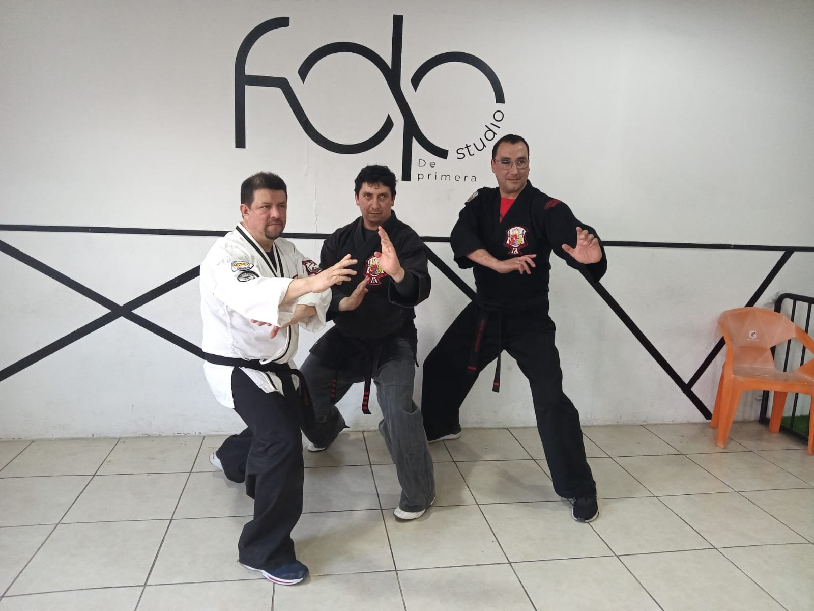
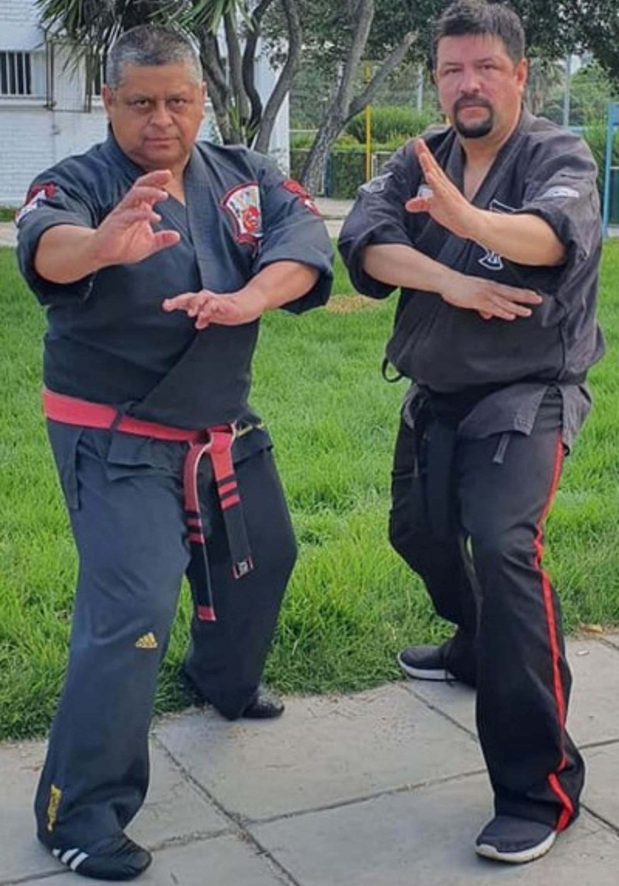
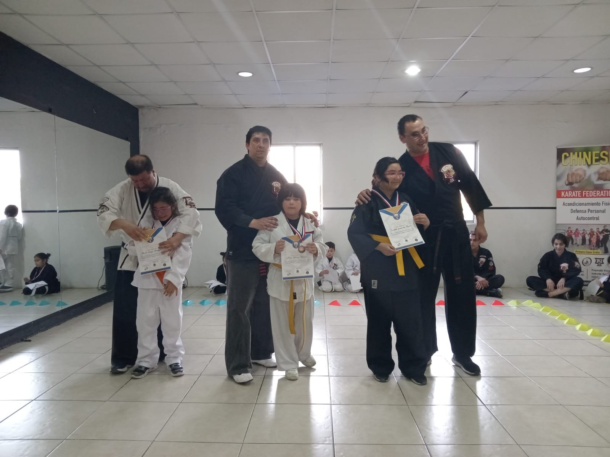
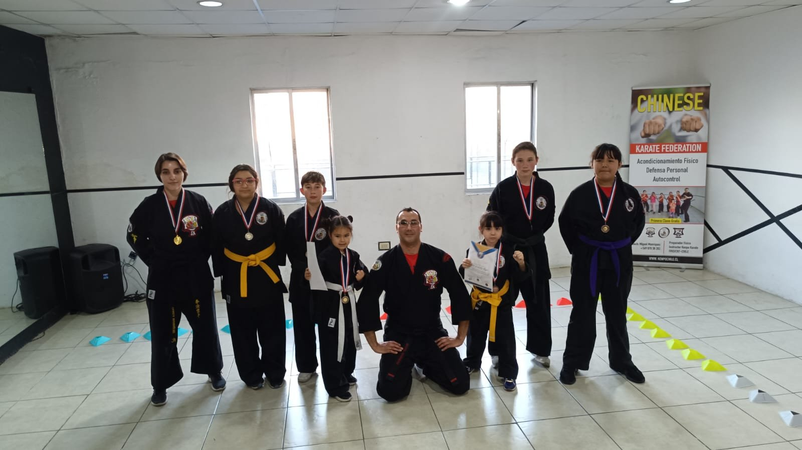
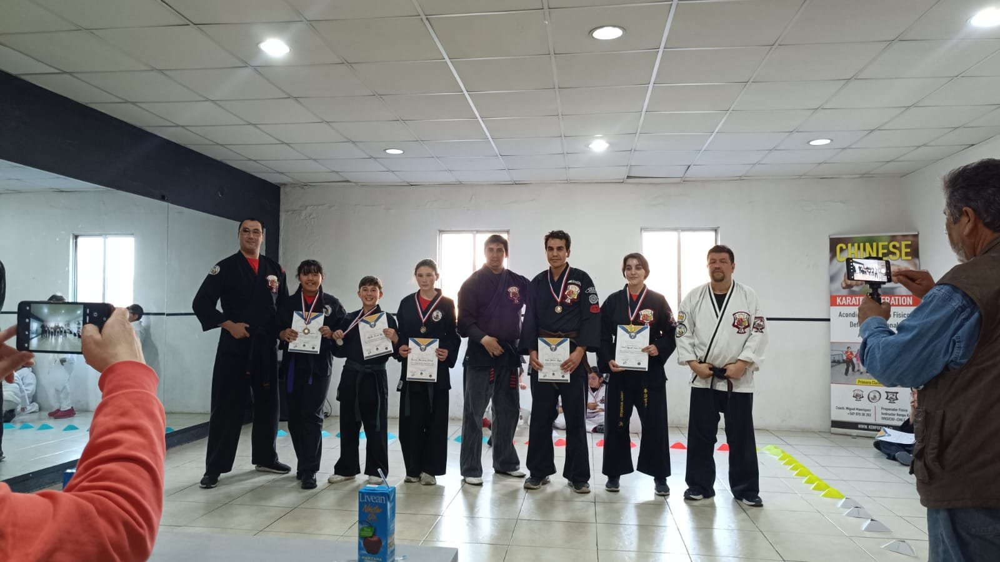
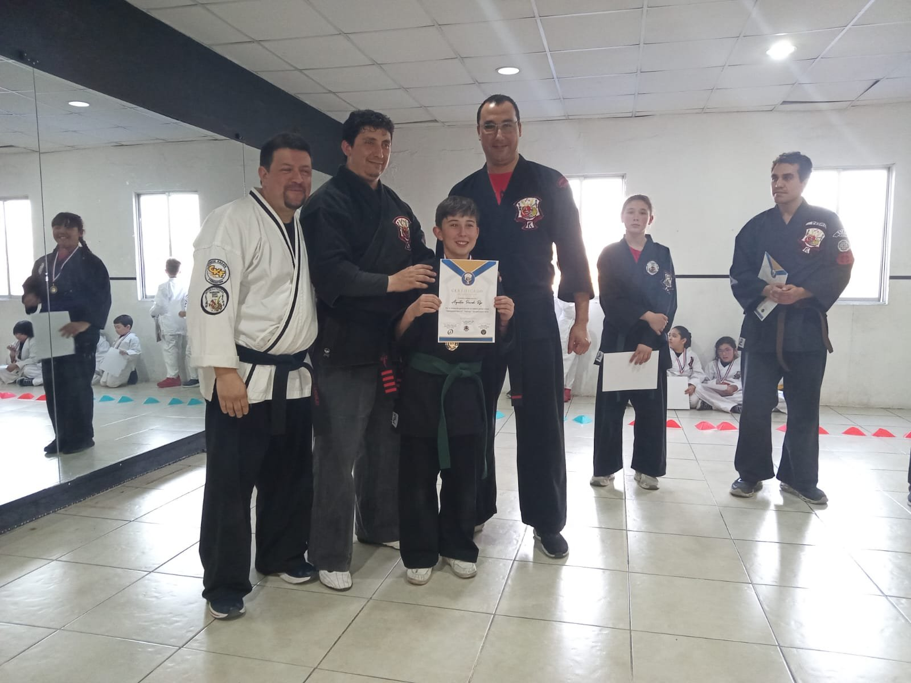
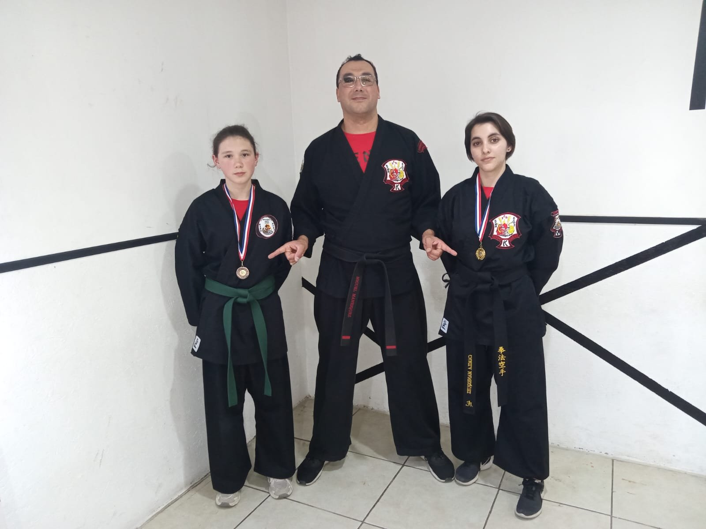
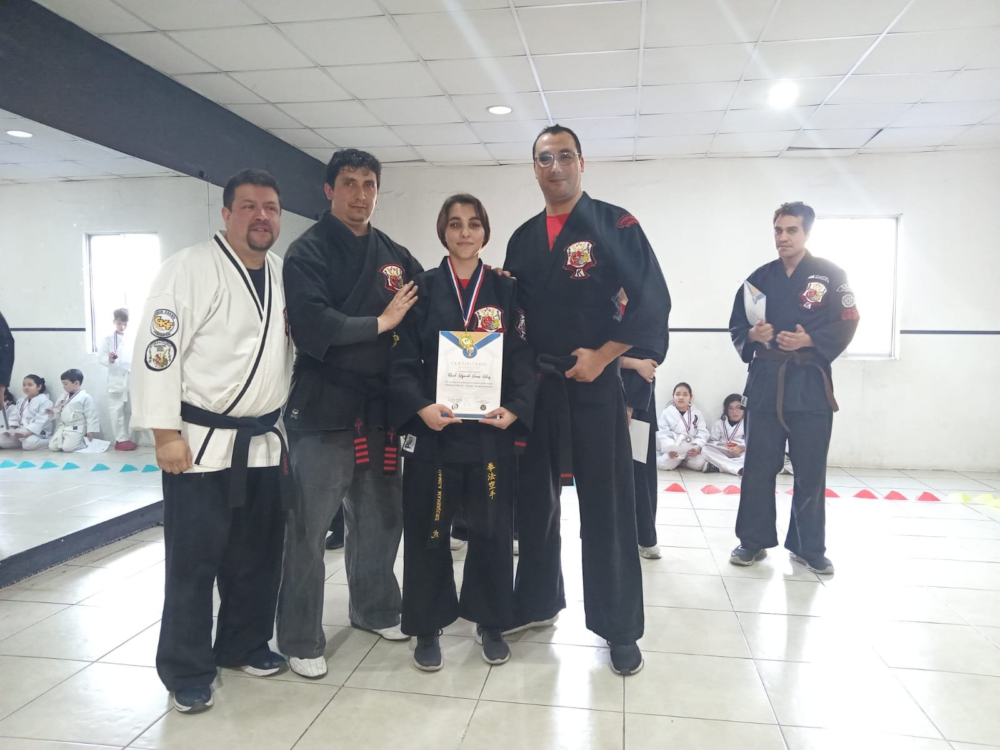

Confianza y seguridad
Saber que puedes reaccionar cambia la forma en que caminas por la calle.
Maipú, Santiago
Kenpo Karate para todas las edades en Maipú. Técnica, defensa personal y respeto, con el respaldo de KenpoChile.

El Kenpo es un arte marcial orientado a la defensa personal. Trabaja respuestas rápidas y combinaciones fluidas de manos y piernas, pensadas para situaciones reales y para personas de cualquier contextura física.
En la escuela lo entrenamos como un sistema completo: técnica, acondicionamiento, control del cuerpo y, sobre todo, la actitud con la que se entra y se sale del dojo.

Se entrena el cuerpo, pero lo que más cambia es la cabeza. Estos son los efectos que muchos alumnos notan con la práctica constante.
Saber que puedes reaccionar cambia la forma en que caminas por la calle.
Técnicas prácticas, entrenadas con control y guiadas por el instructor.
Resistencia, fuerza, flexibilidad y coordinación, sin contar repeticiones.
Llegar, saludar, repetir y corregir. La rutina del dojo ordena el resto de la semana, y es el motivo por el que muchos apoderados inscriben a sus hijos.
Se entrena acompañado. Los alumnos más antiguos corrigen a los nuevos y el saludo abre y cierra cada clase.
Cada examen de grado es una meta concreta y medible. No es motivación abstracta: es un cinturón que refleja el trabajo de varios meses, rendido frente a tus compañeros y evaluado bajo el sistema de la federación.

Programa técnico CKF
Todos parten como cinturón blanco. Se avanza rindiendo exámenes de grado bajo el sistema American Kenpo que usa la federación. Desliza para recorrer el camino completo.
El punto de partida. Nadie llega sabiendo.
3 a 5 meses
3 a 5 meses
3 a 5 meses
3 a 5 meses
6 meses
6 meses
6 meses
6 meses
1 año
2 años
3 años
4 años
Los tiempos corresponden al programa técnico de la federación y son referenciales: cada alumno rinde cuando su instructor lo considera preparado.
Daniel Cornejo es alumno directo del maestro Roberto Vidal desde 1994 y obtuvo su grado de Black Belt en 2016. En 1999 ingresó al Centro Deportivo de Alto Rendimiento CAM.
Como miembro oficial de la federación CKF ha participado en distintos seminarios nacionales. Hoy dirige su propia escuela en Maipú, donde hace clases a alumnos de distintas edades, entre ellos su hija, que ya obtuvo el grado de cinturón amarillo.
Es también uno de los organizadores del torneo Hermandad Marcial, el encuentro que reúne a varias escuelas de la federación.
No necesitas experiencia previa, ni estar en forma, ni tener uniforme. Solo ganas de probar.
Un mensaje por WhatsApp con tu nombre y la edad del alumno es suficiente.
Te confirmamos horario y sede según el grupo que mejor te acomode.
Llegas con ropa deportiva y agua. El instructor te acompaña durante toda la sesión.
Si te gustó, te inscribes y partes como cinturón blanco.
Ropa deportiva cómoda, una botella de agua y llegar unos minutos antes para presentarte. Si tienes alguna lesión o condición de salud, avísale al instructor al comienzo de la clase.
Dos sedes en Maipú: entrena entre semana o los sábados. Las clases son mixtas por edad: niños, jóvenes y adultos entrenan en la misma sesión, cada uno a su nivel.
Av. San Alberto Hurtado 1709, Maipú
WhatsApp +56 9 7306 7807| Días | Grupo | Horario |
|---|---|---|
| Martes y jueves | Todas las edades | 20:00 a 21:15 |
Ramón Freire 786, esquina Av. San Alberto Hurtado, Maipú
WhatsApp +56 9 4039 5201| Días | Grupo | Horario |
|---|---|---|
| Solo sábados | Todas las edades | 10:00 a 11:15 |
Sede 1 · Martes y jueves, 20:00 a 21:15Av. San Alberto Hurtado 1709, Maipú
WhatsApp +56 9 7306 7807
Sede 2 · Sábados, 10:00 a 11:15Ramón Freire 786, esquina Av. San Alberto Hurtado, Maipú
WhatsApp +56 9 4039 5201
Los valores de matrícula y mensualidad se entregan directamente por WhatsApp, según el grupo y la sede. Escríbenos y te respondemos con el detalle.
No. Todos los alumnos parten como cinturón blanco, sin excepción. El programa está diseñado para que alguien que nunca ha hecho artes marciales pueda seguir la clase desde el primer día, y es normal sentirse descoordinado al principio.
Las clases son para todas las edades y en la escuela entrenan niños, jóvenes y adultos.
Ropa deportiva cómoda que te permita moverte con libertad, y una botella de agua. No necesitas comprar uniforme para probar.
El avance por cinturones sigue el programa técnico de la federación CKF, basado en el sistema American Kenpo de Ed Parker. Cada grado tiene sus técnicas, sus sets y formas, y su teoría.
El alumno rinde examen cuando el instructor lo considera preparado. Los tiempos del programa son referenciales, no plazos garantizados.
Sí. International Cornejo Kenpo Studio forma parte de la red de escuelas de KenpoChile, dirigida por el maestro Roberto Vidal, y de la federación internacional Chinese Karate Federation. Eso significa un sistema de grados común y certificados reconocidos entre todas las escuelas de la red.
Los valores de matrícula y mensualidad se informan directamente por WhatsApp, según la sede y el grupo. Escríbenos y te enviamos el detalle actualizado.
International Cornejo Kenpo Studio forma parte de la red de escuelas de KenpoChile, dirigida por el maestro Roberto Vidal, 8th Degree Black Belt, Associate Master of the Arts.
Esto significa que el alumno no entrena aislado: aprende bajo el mismo programa técnico y el mismo sistema de grados que el resto de las escuelas de la federación en Chile, y sus certificados son reconocidos dentro de toda la red.
También significa seminarios, clases especiales y torneos compartidos entre escuelas, como el Hermandad Marcial que la escuela coorganiza.
Visitar kenpochile.clExámenes de grado, entregas de certificados y clases compartidas con otras escuelas de la federación.





Artículos
Las dudas que más frenan a quien quiere empezar, respondidas con calma.
No hay que estar listo para empezar. Hay que empezar para estar listo.
Completa el formulario y se abrirá WhatsApp con tu mensaje listo para enviar. También puedes escribirnos directamente.